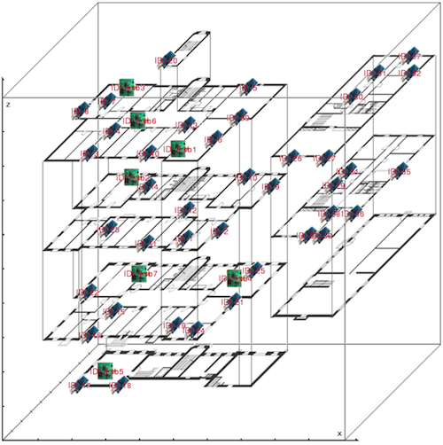

The UBERN testbed located at Neubrückstrasse 10, 3012 Bern, Switzerland, consists of the following sensor nodes:
The UBERN testbed hence consists of 47 sensor nodes. The network spans accross the 4 floors of the building.
The 7 MSB430 nodes are placed indoors. Out of the 40 TelosB nodes, 39 nodes are placed indoors, each of them in different rooms or corridors of the building, and one node is an outdoor node placed on the top windowsill of the building's small tower.
The figure above depicts quite exactly (accuracy < 2m) the position of the sensor nodes inside the building.